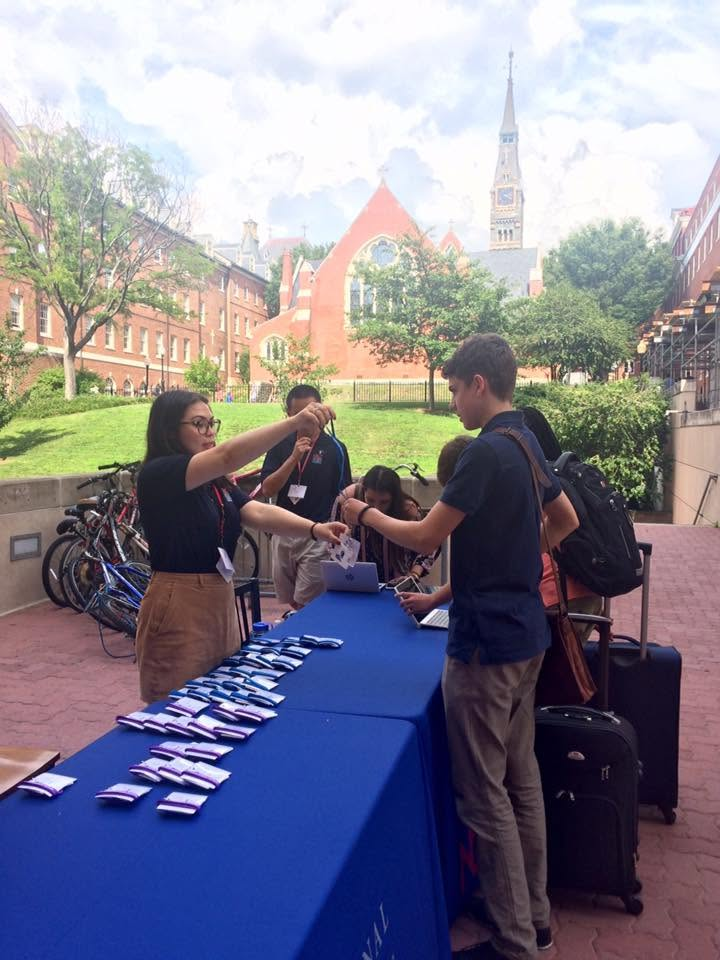
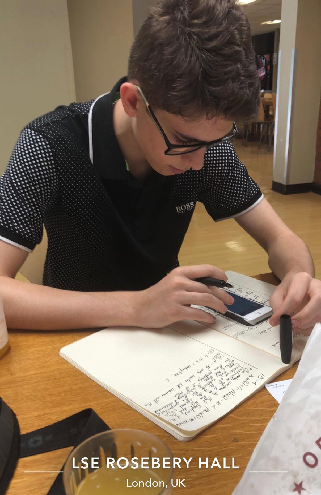
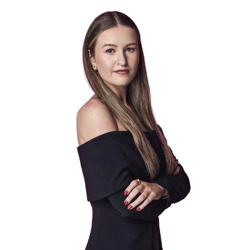

H4
Capability, made legible.
Capability, made legible.


Sources: edX, “100M learners reached”; Coursera Q1 2026 financial results
H4 turns how a person learns into confidence in what they can do.
A living model of how a person learns, and what they could become.
Capability read from process, not measured from outputs.
Infrastructure that converts learning activity into verifiable confidence.

Source: Gallup, "Confidence in Institutions" (annual). Share of U.S. adults expressing "a great deal" or "quite a lot" of confidence. Higher-education item begins 2015; figures shown for 2015, 2018, 2023, 2024, 2025.